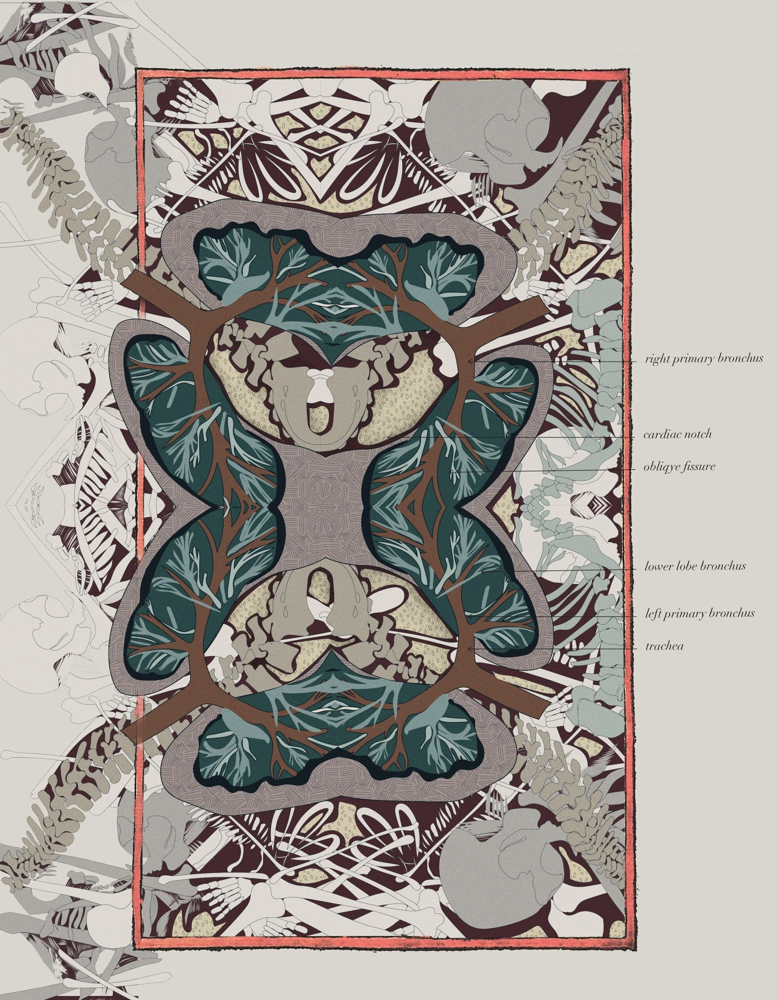
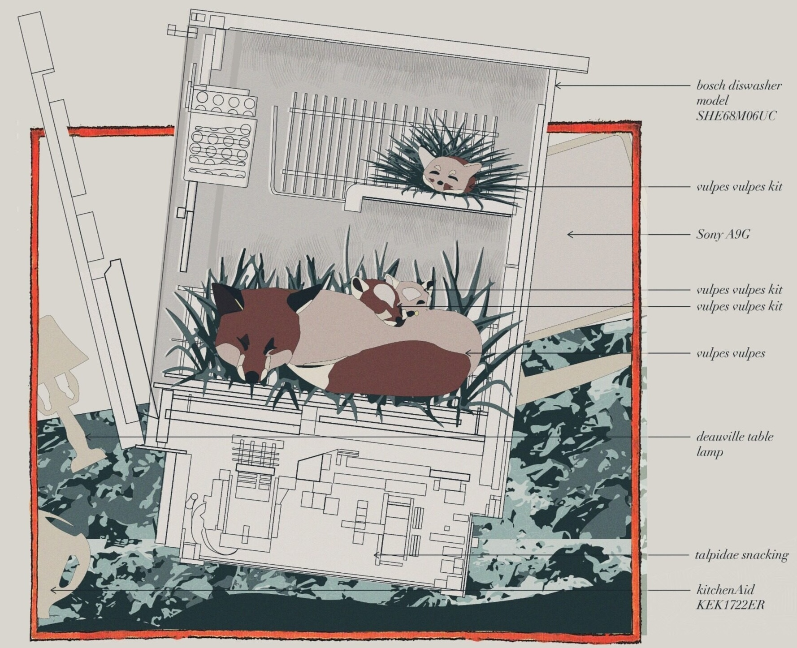

2022
THE METAMORPHOSIS OF THE POLYSAPIEN
Bio-Mythology and Anatomic Fabulation
“My mind now turns to stories of bodies changed into new forms.” — Ovid, Metamorphoses
“The part always has a tendency to unite with its whole in order to escape from its imperfections.” — Leonardo da Vinci
The Polysapien is a speculative bio-mythology about collective human evolution. It asks how bodies might adapt, combine, and transform in response to architecture, environment, and one another.
CONTEXT
Core I Studio + Independent Study, MIT
LOCATION
Jamaica Plain, Planet Earth
SUPERVISORS
Mohamad Nahleh, Jeffery Landman, Brandon Clifford
SUPPORT
CAMIT Art Grant + Harold Horowitz Student Research Fund
PUBLICATION
Architecture of the 20th century was quite a worldly affair, focused consuming materials, energy, and land.
Skyscrapers built into the sky and only walls allowed us to manufacture the landscape, popping a head or
anything but the comfort of individuals, to their body. The Architecture of bodies exists and becomes just
that: the body is central to architecture’s existence, as this 20th century had sight of.
This Polysapien reinvents the body as a central player in speculative architecture, creating a narrative where
human physiologies evolve into architectural forms. This creature is the imminent urban scale evolution of the
human body, stemming from a near-future re-appropriation of architecture and an emergent symbiosis condition
in architecture as a pathway to the spiritual realm.
Originating from a collective adaptable architectural relics within Boston, the people of Boston require them
to exist within ecosystems, becoming our creature’s architectural organ. They surrender their individuality,
blurring borders between physical and spiritual realms. Soon, skin begins to give way to a merging of the
collective into a whole, leading to the creation of a new evolution of the human; the Polysapien. In four
years or more and more bodies choose themselves to the architecture, growing into a series of skyscrapers
across the globe. As the creature’s biology reorganizes and reconfigures, foreign organisms begin to inhabit
its cells, leading to the emergence of another ecosystem.
This showcases cells into carrying the chaotic relationship between space and the body, generating whatever
the human physiology can make alongside the ever-changing architectural landscape. Rather than destruction,
mold humanity apply larger-scale architecture to the creation of new ecosystems? At the sacrifice of human
individuality, could architecture, in turn, create life itself?






THE COMPLETE ILLUMINATED MANUSCRIPT
Read the full story for yourself here: